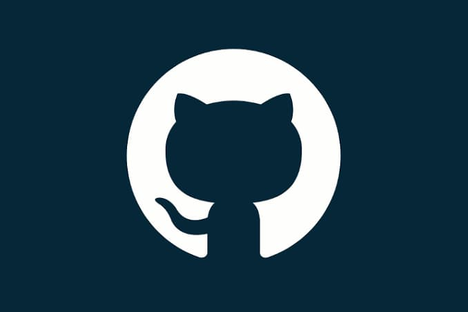
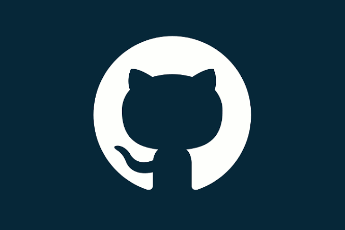
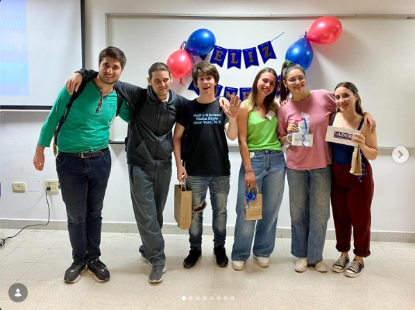

Datos y Automatización
Extracción, limpieza, modelado y visualización para la toma de decisiones.
Automatizo los informes de tu PyME para que recuperes horas y decidas con datos claros. Excel, Python y Power BI aplicados a problemas reales de negocios de Entre Ríos.
Extracción, limpieza, modelado y visualización para la toma de decisiones.
Entendimiento del negocio y aplicación de marcos de trabajo ágiles.
Herramientas técnicas para el despliegue de soluciones y webs.

Diseño y desarrollo front-end de un flujo de contratación de seguros en 4 pasos, enfocado en la reducción de la fricción y validación en tiempo real.
Leer caso de estudio completo →
Modelo predictivo básico desarrollado en Python. Utiliza Scikit-Learn para entrenar un árbol de decisión que clasifica datos basándose en variables numéricas.
Ver repositorio →
Implementación desde cero de Grafos, Árboles Binarios (AVL), Heaps, Pilas, Colas y Listas en Python. Resolución de problemas de red aplicando Dijkstra y Kruskal.
Ver repositorio →Inicio Analista en Sistemas en la FCyT y, ese mismo año, gano el Desafío del Conocimiento de la facultad. No fue un premio más: fue la primera confirmación de que mi fuerte no es memorizar, es resolver problemas bajo presión. Ahí entendí hacia dónde quería ir.
Pauso la facultad, no por abandonar, sino para responder una pregunta que la cursada sola no me contestaba: ¿para qué quiero estudiar esto? Ese año elegí el enfoque que hoy me define: datos, automatización y tecnología aplicada a negocios reales. A veces avanzar es detenerse a pensar.
Vuelvo a la facultad y, en paralelo, completo 7 certificaciones internacionales a través de Santander Open Academy, IE University y EF SET: Ciencia de Datos, Python, Excel, Gestión de Proyectos y Agile, Escritura persuasiva y Business English, con certificación EF SET C1 Advanced. Sumo bases de datos, machine learning y contenedores. No junté cursos: armé el stack que un negocio necesita para dejar de perder tiempo en tareas manuales.
Completo Power BI Intermedio: análisis y modelado de datos y lanzo mi proyecto personal: automatización de informes y análisis de datos para PyMEs de Colón y la zona. El objetivo es concreto y medible: que cada negocio recupere horas de trabajo manual y decida con datos claros. Es el año en que todo lo aprendido empieza a trabajar para otros.
Me dedico a automatizar la parte de datos de PyMEs. Muchos negocios viven en Excel: cargan ventas a mano, arman informes copiando y pegando, y pierden horas por semana en eso. Yo lo que hago es ordenar esos datos y armar reportes que se generan solos, o paneles donde el dueño ve sus ventas y su stock desde el teléfono. También hago webs simples cuando el negocio no tiene presencia online.
Trabajo con Excel, Python y Power BI, y estoy terminando la carrera de Análisis de Sistemas. Arranqué hace poco por mi cuenta, así que estoy tomando los primeros clientes con precios accesibles y mucha dedicación: al ser un proyecto chico, el trato es directo conmigo, sin intermediarios.
Mi espacio de trabajo, eventos de tecnología y momentos de la facu.
